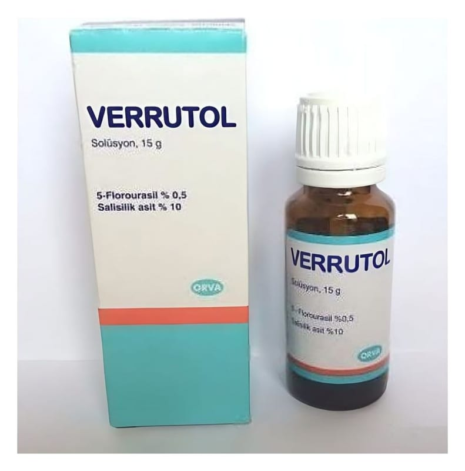

Verrutol %0,5 + %10 Deri Çözeltisi (15 g)

Ne için kullanılır
KT · Bölüm 1 VERRUTOL, deriye dışarıdan uygulanan bir üründür. Siğil ilaçları olarak adlandırılan bir ilaç grubuna dahildir. Etkin madde olarak; 1 gramında, 5 mg 5-Florourasil ve 100 mg salisilik asit içermektedir. VERRUTOL; 15 g çözelti içeren, kendinden fırçalı kapakla kapatılmış amber rengi cam şişede kullanıma sunulmaktadır. VERRUTOL, siğil tedavisinde kullanılır. Siğiller; bir virüs türü nedeniyle deri üzerinde görülen aşırı büyümelerdir. Genellikle, parmaklar ve ellerin üzerinde (dış kısmında) görülürler. Bulaşmaları direkt temasladır (özellikle hasarlı ve sıyrılmış ciltte). Ayak tabanında da görülebilen çeşidi ağrı verici olabilir. Siğile neden olan virüs oldukça bulaşıcıdır. Bu nedenle tedavi edilmezse büyür, yayılır ve bulaşırlar. VERRUTOL’ün içeriğinde bulunan 5-Florourasil siğillerin büyümesini engellemekte, salisilik asit ise siğili yumuşatarak 5-Florourasil’in siğilin içine işlemesini kolaylaştırmaktadır.